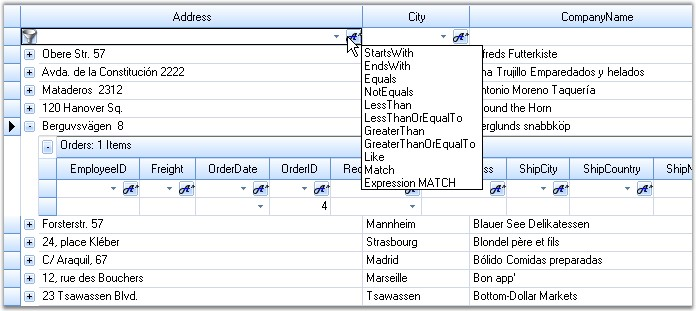
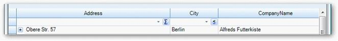
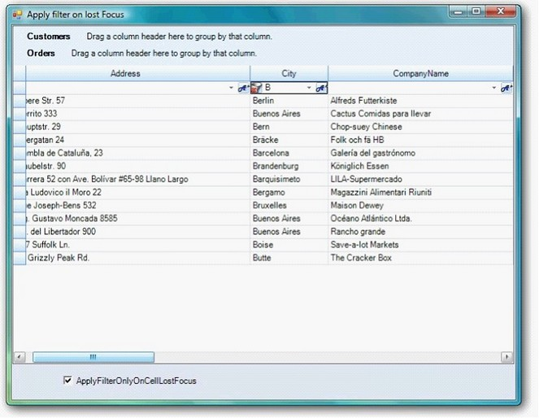

The GridDynamicFilter class is used to wire a custom filter bar to the Grid Grouping control by replacing the default filter bar. The existing filter bar logic is extended to make the filter easy to use. This feature displays filtered results as you type each character.
The new filter bar adds two cell buttons, Filter button and Clear Filter button, inside every filter bar cell. The Filter button is used to display a list of the available Compare Operators in a drop down. The selected operator will then be associated with the value present in the filter bar cell to form a filter string. The Clear Filter button, as its name indicates, clears the record filters of the respective column. This button will be displayed for a filter bar cell, only when that particular cell is in focus.
The following code example illustrates how to invoke the Grid Dynamic Filter.
1. Using C#
|
[C#]
GridEngineFactory.Factory = new Syncfusion.GridHelperClasses.AllowResizingIndividualRows(); |
2. Using VB.NET
|
[VB.NET]
GridEngineFactory.Factory = New Syncfusion.GridHelperClasses.AllowResizingIndividualRows() |
The following screen shot illustrates Grid Grouping control with filter drop down.

Figure 444: Grid Grouping control with Filter Drop Down
Support to Save and Load Compare Operators State in Grid Dynamic Filter
GridDynamicFilter in GridGroupingControl is now enhanced a functionality to serialize/de-serialize the compareoperator images in button. This can be achieved by handling the following method calls.
|
<code>filter.LoadCompareOperator();</code> <code>filter.SaveCompareOperator();</code> |
When the code runs, the following output displays.

Figure 445: CompareOperator states restored in respective columns
Apply Filter Only on Lost Focus in GridDynamicFilter
ApplyFilterOnlyOnCellLostFocus property enables you to turn off/on the filtering on each key stroke in GridDynamicFilter.
Set ApplyFilterOnlyOnCellLostFocus property to true to filter only when the filter cell lost focus.
This disables filtering for each key stroke including Enter, arrow keys, and tab keys.
Defaults value is false and allows filtering for each key stroke.
The following code illustrates how to add ApplyFilterOnlyOnCellLostFocus property.
|
[C#]
GridDynamicFilter filter = new GridDynamicFilter(); filter.ApplyFilterOnlyOnCellLoseFocus= true; |
when the code runs, the following output displays.

Figure 446: Filter on Lost Focus on lost focus